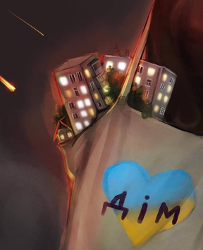
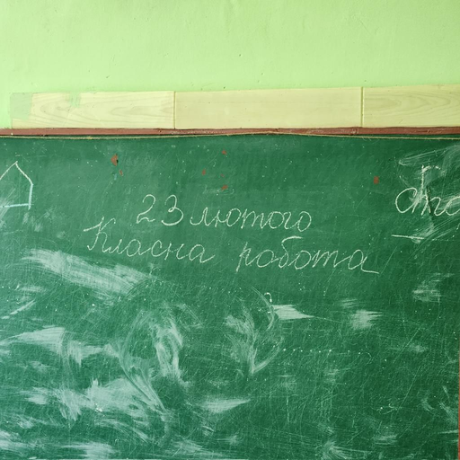
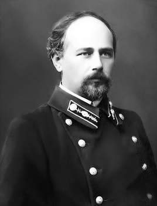
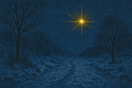
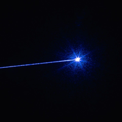

Марія Чуприненко
Оспівувачка степів морів Херсонщини
Марія Чуприненко, авторка сольного музичного проекту Артистка
Чуприненко, народилась 22 серпня 1995 року. Сама себе називає
«оспівувачкою степів та морів на Херсонщині», адже саме там минуло
її дитинство та юність. Про своє життя в селі, артистка відгукується
з теплом та часто згадує про рідні місця у піснях.
У 2022 році, заявила про себе як музикантка, випустивши перший сингл
«Легко». Її творчість емоційна та глибока, тексти наповнені
особистими спогадами та переживаннями відгукуються багатьом. Сама,
Артистка Чуприненко, називає свій музичний стиль «документальними
піснями». Цікавий та новий для українського слухача стиль, зміг
підкорити серця українців, подарувавши пісням Артистки Чуприненко
десятки тисяч прослуховувань на платформі Youtube Music, а живим
концертам «своїх» людей.
Її виступи схожі на щемкі зустрічі у колі друзів, своєю музикою та
виконанням артистка створює атмосферу легкості, глибини, емоційності
та дому. Артистка Чуприненко, дає концерти у різних містах України,
а у травні 2025 року організовано концертний тур до якого увійшли
Харків, Одеса, Вінниця та Львів.
І хоча до 2025 року, репертуар артистки складається в основному з
сумних композицій, в одному з інтерв’ю вона поділилась, що хотіла б
записати диско-альбом.
Артистка Чуприненко – Камінь
Куплет 1

-
Ходжу по такому красівому городу
і воно мені таке чуже.
Роскошне, кажеться, потворне.
Вокруг ні панельок, ні гаражей.- Приспів
-
Може це загальна усталость, може, ощущенческа кома,
а може, просто хочу додому, я дуже хочу додому.
Може це загальна усталость, може ощущенческа кома,
а може просто хочу до дому, я дуже хочу до дому.
Куплет 2

-
О! Ця вулиця похожа на Одесу.
Мені тут починає подобатися.
І пилякою пахне, почті як в Новоніколаївці.
Мам, я приїжджала, Ну точно Таркальню.
Дерева ті самі. Як вроді хтось взяв речі, які я люблю,
і поміняв місцями.
Я раніше дуже мечтала путешествувати.
Клеїла картинки собі на стінку, а тепер
у цю саму стінку впарлося дуло танка.
Як на цьому базарі можна розраховуватися рублями,
якщо я завжди за гривні купувала там сметанку?
Наші разбомбили мою музичну школу,
щоб вбити живущих там солдатів, рускіх.
І я вроді не дуже її любила,
але мені все одно чогось дуже грустно.
Може тому що, росія стірає з лиця землі мою землю
і так робить це умєло, як, вроді, вишиває гладдю в пяльцях.
Я дуже давно не сміялась. Дуже хочеться посміяться.- Приспів
-
Може це загальна усталость, може, ощущенческа кома,
а може, просто хочу додому, я дуже хочу додому.
Може це загальна усталость, може ощущенческа кома,
а може просто хочу до дому, я дуже хочу до дому.
Куплет 3
-
Зараз іноді моє тіло перестає слухатися.
Просто починає трястися.
І в такі моменти я знаю, що треба думати про те, що є зараз.
І точно не думати про те, що було колись.
От, наприклад, «Каштан Аллея».
Модніки ходять точно-точно такі самі.
Вроді хтось взяв речі, які я люблю, і поміняв місцями.
Якщо чесно, все, що відбувається, мені здається дуже неправильно.
Серце міняється місцем з каменем.
Серце міняється місцем з каменем.
Серце міняється місцем з каменем.
Микола Леонтович
Український Бах

Микола Леонтович – композитор неповторний. Сприйнявши й глибоко
засвоївши традиції, він упевнено пішов своїм шляхом, склавши власним
доробком цілий етап у розвитку української хорової музики. Композитор зумів
відібрати все краще з творчості попередників і сучасників, доповнити його
досягненнями світової культури, збагатити власним досвідом, поєднати все це з
народною пісенністю і створити такі шедеври хорового мистецтва, які стали школою
художньої майстерності для цілого покоління митців.
В обробках народних пісень Леонтовича все становить надзвичайний інтерес: поліфонічна
тканина і гармонія, народна і авторська мелодика та метро-ритм народної пісні. Обробки
Леонтовича насичені, здавалося б, діаметрально протилежними якостями: складністю і простотою,
мудрістю і наївністю, символікою і реалізмом, узагальненістю образного змісту і глибиною підтексту,
об’єктивністю епосу і характерністю портретних зарисовок та динамікою дії драми, історичною вірогідністю
пісні і сучасністю почуттів, що зазвучали в обробці.
Музична спадщина Леонтовича – це неоціненний внесок в українську та світову музичну
культуру. Без творчості нашого класика зараз неможливо собі уявити хорове
мистецтво XX століття в усьому його різноманітті. Ім’я Миколи Леонтовича сприймається
з великою пошаною як в Україні, так і за її межами.
Щедрик

- Щедрик, щедрик, щедрівочка,
- Прилетіла ластівочка!
- Стала собі щебетати,
- Господаря викликати:
- - Вийди, вийди, господарю,
- Подивися на кошару!
- Там овечки покотились
- І ягнички народились.
- В тебе весь товар хороший,
- Будеш мати мірку грошей.
- Хоч не гроші, то полова....
- В тебе жінка чорноброва.
- Щедрик, щедрик, щедрівочка,
- Прилетіла ластівочка!
Мирослав Скорик
Людина легенда
Мирослав Скорик — видатний український композитор, народний артист
України, лауреат Державної премії імені Тараса Шевченка, професор і
науковець, який обіймав важливі посади у Львівській та Київській
консерваторіях і активно працював у Спілці композиторів України. Його
дитинство було непростим: у роки сталінських репресій родину вислали
до Сибіру. Виростав він у музичній родині, а його талант помітила
відома співачка Соломія Крушельницька, після чого він почав навчатися
у музичних закладах Львова, Києва та москви.
Ще під час навчання Скорик почав створювати фортепіанні твори, які
виконували відомі музиканти, а його творчість високо оцінив
композитор Дмитро Шостакович. Слава композитора прийшла до нього у
1960-х роках, коли він одним із перших поєднав українську музику з
ритмами джазу і року. Він створив багато серйозних музичних творів, а
також написав музику до відомих фільмів, зокрема «Тіні забутих
предків», «Царівна», «Кам’яний хрест».
Мирослав Скорик був одним з організаторів міжнародного фестивалю
«Контрасти» у Львові та продовжував активно працювати й
експериментувати в музиці. Важливою подією стала світова прем’єра
його опери «Мойсей». Він отримав багато нагород, зокрема став
лауреатом програми «Людина року – 2003» та отримав звання «Львів’янин
року» у 2004 році.
Намалюй мені ніч
Куплет 1
- Я до тебе прийду, через гори і доли,
- Тільки ти не розпитуй мене, не хвилюй,
- Намалюй мені ніч, коли падають зорі,
- Намалюй, я прошу, намалюй
-
Намалюй мені ніч, коли падають зорі,
Намалюй, я прошу, намалюй,
Намалюй, я прошу, намалюй.
-
Намалюй мені ніч, коли падають зорі,
- Намалюй, я прошу, намалюй
- Намалюй мені ніч, коли падають зорі,
- Тільки ти не розпитуй мене, не хвилюй,

Куплет 2
- Намалюй мені ніч, що зве і шепоче,
-
Найпалкіші слова, найдивніші слова,
-
В гами барв піднеси славу темної ночі
- Що навколо зірки розсіва...
-
В гами барв піднеси славу темної ночі
-
Найпалкіші слова, найдивніші слова,
Куплет 3
- Вечір, день а чи ранок?
- Що на серці - чи промінь, чи ніч,
- Намалюй мені ніч, коли зорі багряні,
- Вирушають у путь, щоб згоріть.
- Намалюй мені ніч, коли зорі багряні,
-
Вирушають у путь, щоб згоріть,
Вирушають у путь, щоб згоріть.
-
Вирушають у путь, щоб згоріть,
- Намалюй мені ніч, коли зорі багряні,
- Вирушають у путь, щоб згоріть.
- Намалюй мені ніч, коли зорі багряні,
- Що на серці - чи промінь, чи ніч,